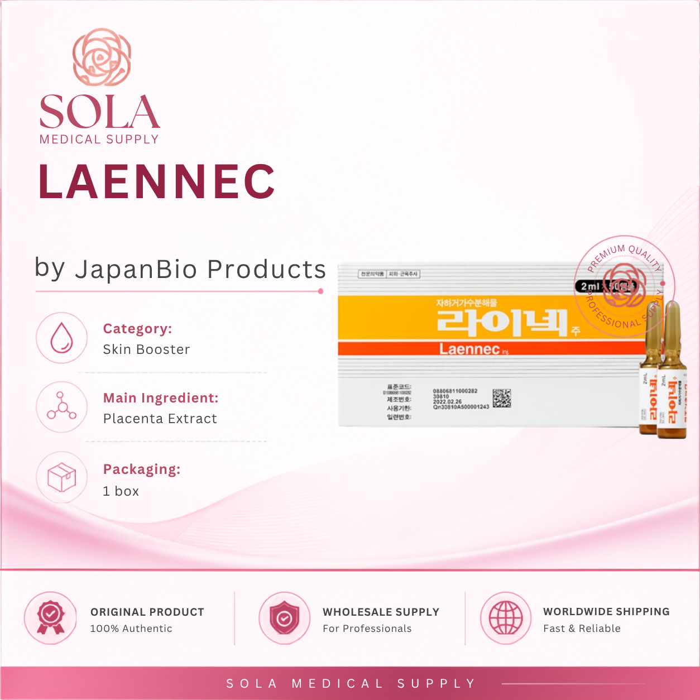
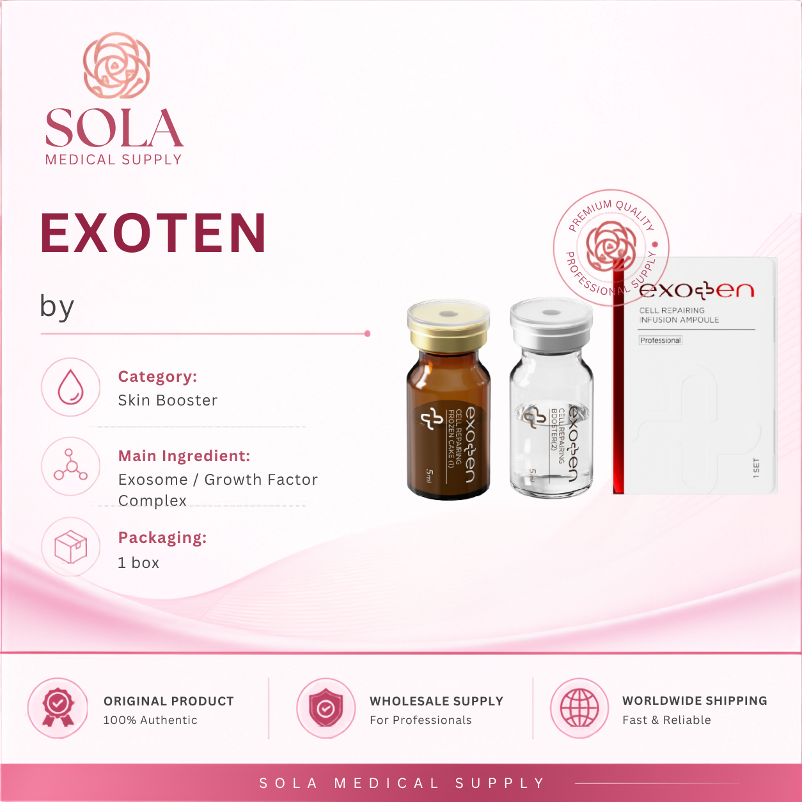
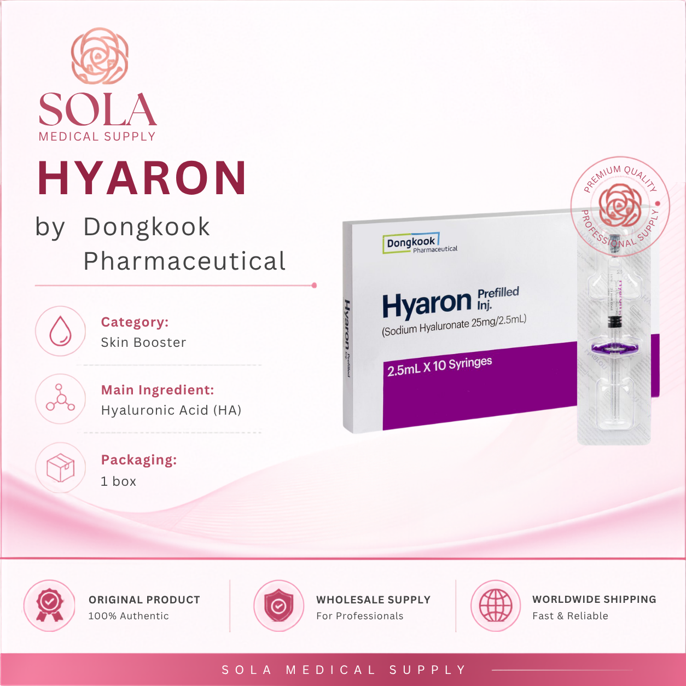
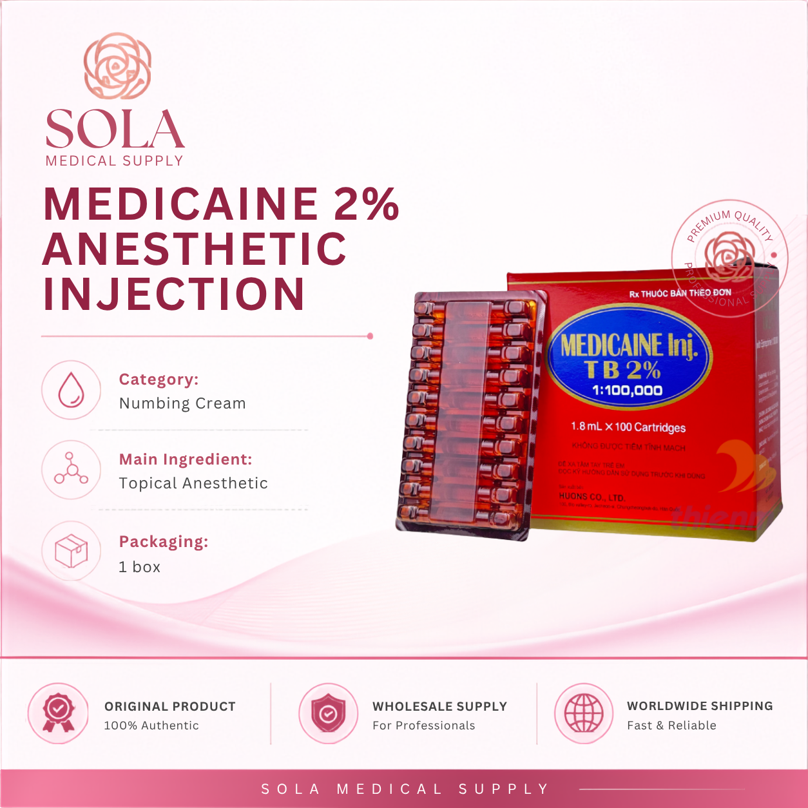
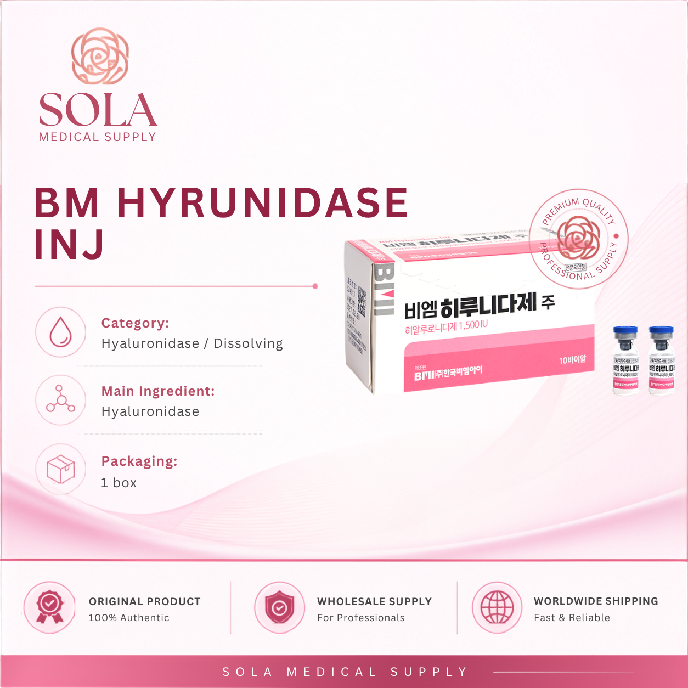
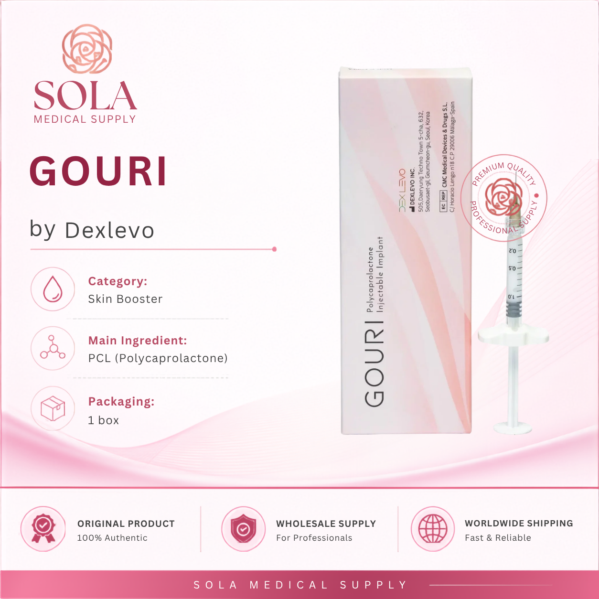
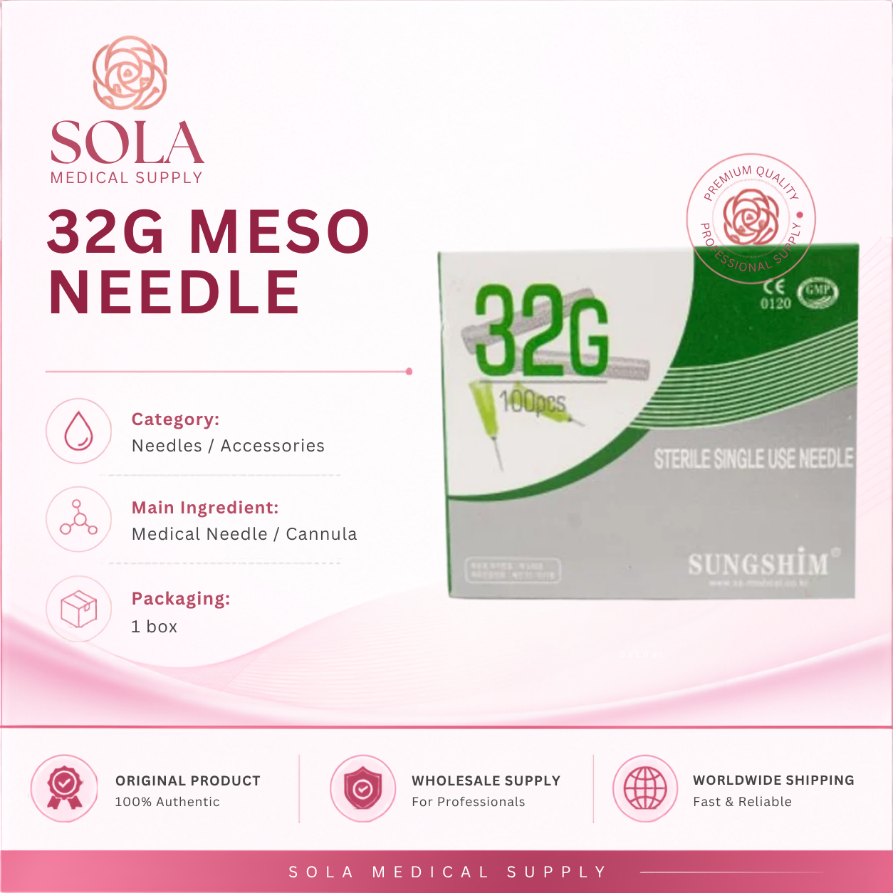
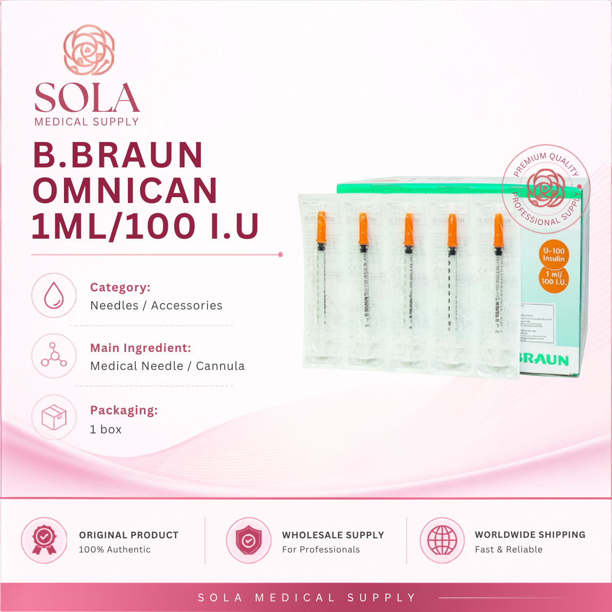
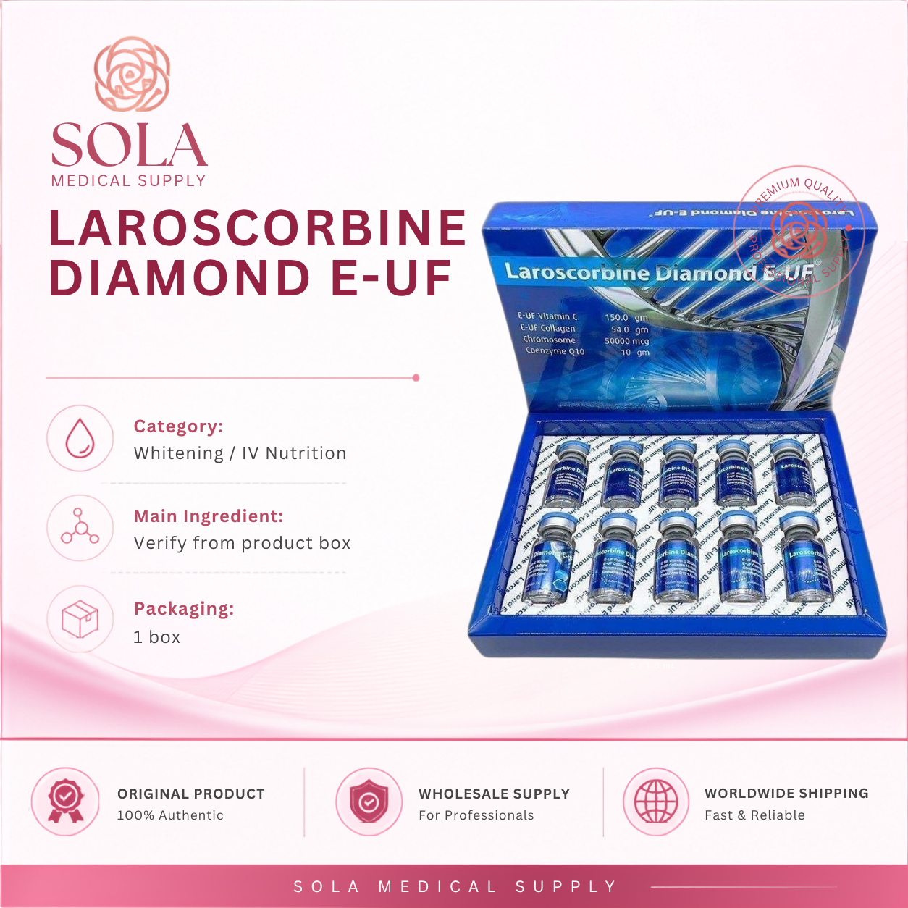

How professional buyers evaluate an aesthetic wholesale supplier
A practical checklist for checking communication, current availability, order handling, shipment visibility and realistic support before ordering.
Read the guide →Practical sourcing, product-selection and shipping notes for clinics, spas, resellers and distributors ordering across borders.
Articles help buyers prepare clearer quote lists and reduce back-and-forth.
Use practical order-planning cues instead of relying on price alone.
Every topic is written to help professional buyers move from research to quotation.
Short, practical articles for clinics, spas, resellers and distributors sourcing aesthetic products internationally.

This article provides essential guidelines for clinics, spas, and resellers on sourcing Hyalaze wholesale, covering documentation, handling, and shipping processes.
Read article →
A practical buyer-focused guide for clinics, spas and distributors evaluating Laennec. Use it to prepare clearer requests, review documentation needs and coordinate shipment support.
Read article →.jpg)
This article provides aesthetic clinics with essential guidance on sourcing Mounjaro 7.5mg, covering supplier selection and procurement strategies.
Read article →
Explore key considerations for professional buyers evaluating Gana V Line for wholesale orders. Ensure informed purchasing decisions for your clinic or spa.
Read article →
This comprehensive guide provides clinics and distributors with key insights on sourcing Jariot body fillers wholesale, ensuring effective procurement.
Read article →This guide provides crucial information for spas, clinics, and resellers on procuring Sculptra, a leading biostimulator for aesthetic treatments.
Read article →This article provides a detailed guide on the essential documentation, handling, and shipping considerations for sourcing Wondertox 200U wholesale.
Read article →
A practical buyer-focused guide for clinics, spas and distributors evaluating Exoten. Use it to prepare clearer requests, review documentation needs and coordinate shipment support.
Read article →
This guide provides essential insights into wholesale sourcing of Hyaron skin boosters, tailored for aesthetic clinics and resellers.
Read article →Explore the essential factors that professional buyers consider when evaluating Milanie dermal fillers for wholesale purchases, ensuring informed decisions.
Read article →This guide provides essential insights for clinics and distributors looking to source 34G meso needles wholesale, covering key considerations and best practices.
Read article →This guide provides crucial procurement insights for spas, clinics, and resellers looking to source Admedic products effectively.
Read article →Explore the key aspects of sourcing J-Cain Numbing Cream 15.6% wholesale, including documentation, handling, and shipping essentials for professionals.
Read article →
Explore essential factors to consider before ordering Medicain 2% for clinics, ensuring quality and compliance with your procurement needs.
Read article →
This guide provides aesthetic clinics with essential insights into sourcing BM Hyrunidase wholesale, covering suppliers, benefits, and procurement tips.
Read article →This article explores the evaluation process for professional buyers considering Samsung Pharm Whitening for wholesale procurement.
Read article →This comprehensive guide offers clinics and distributors essential tips for sourcing Mounjaro 5mg wholesale, ensuring effective procurement strategies.
Read article →Explore the procurement process for Aqualyx, focusing on key considerations for spas, clinics, and resellers. Understand sourcing, regulations, and logistics.
Read article →Explore the critical aspects of wholesale body filler sourcing from France, including essential documentation and shipping tips for clinics and resellers.
Read article →
A practical buyer-focused guide for clinics, spas and distributors evaluating Gouri. Use it to prepare clearer requests, review documentation needs and coordinate shipment support.
Read article →
This guide provides aesthetic clinics and resellers with essential strategies for sourcing Allergan 100U, focusing on supplier selection and procurement best practices.
Read article →A practical buyer-focused guide for clinics, spas and distributors evaluating Buy Exocode. Use it to prepare clearer requests, review documentation needs and coordinate shipment support.
Read article →This comprehensive buyer's guide covers everything you need to know about sourcing TMIE VIP wholesale skin boosters for clinics and distributors.
Read article →This guide provides insights into procuring Sardenya dermal fillers, tailored for clinics, spas, and resellers, ensuring informed purchasing decisions.
Read article →A practical buyer-focused guide for clinics, spas and distributors evaluating Wholesale Linospan. Use it to prepare clearer requests, review documentation needs and coordinate shipment support.
Read article →
A practical buyer-focused guide for clinics, spas and distributors evaluating 32G Meso Needle. Use it to prepare clearer requests, review documentation needs and coordinate shipment support.
Read article →
Explore effective strategies for sourcing B.Braun Omnican 1ml for aesthetic clinics, including supplier selection and procurement processes.
Read article →A practical buyer-focused guide for clinics, spas and distributors evaluating Buy Triamcinolo. Use it to prepare clearer requests, review documentation needs and coordinate shipment support.
Read article →This comprehensive guide provides clinics and distributors with essential information on sourcing J-Cain Numbing Cream 10.56% wholesale, including key considerations and tips.
Read article →This guide provides clinics, spas, and resellers with essential insights into procuring Huons Water Numb, ensuring effective purchasing decisions.
Read article →Explore the critical aspects of sourcing Liporase wholesale, focusing on documentation, handling, and shipping essentials for clinics and distributors.
Read article →
Learn key factors to consider before ordering Laroscorbine Diamond E-UF for clinics, including supplier credibility, product quality, and compliance.
Read article →
This guide provides aesthetic clinics with essential sourcing strategies for Mounjaro 2.5mg. Explore supplier options and procurement tips.
Read article →
What professional buyers should check before sourcing Lemon Bottle for clinic and reseller demand.
Read article →
Essential sourcing notes for clinics and distributors comparing body filler supply options.
Read article →
How spas, clinics and resellers can prepare better wholesale requests for Olidia.
Read article →
Documentation, handling and shipping questions buyers should clarify before ordering.
Read article →
Key supplier checks for clinics comparing Hairna sourcing, communication and order support.
Read article →
How clinics and resellers can evaluate product fit, quantities and supplier support before ordering.
Read article →
A clearer framework for checking category fit, wholesale value and buyer expectations.
Read article →
Quality, pricing and supplier-evaluation notes for professional aesthetic buyers.
Read article →
Essential criteria for evaluating communication, reliability and sourcing support.
Read article →
What to clarify before dispatch: destination, product sensitivity, tracking and realistic delivery expectations.
Read article →
A structured request helps your supplier return a faster, more useful quotation.
Read article →
A practical evaluation framework for professional aesthetic buyers working across borders.
Read article →These clusters help customers find HANSEONG when researching products, categories and wholesale sourcing questions.
Brand comparisons, variants, sourcing checks and quotation preparation.
Buyer questions around product selection, stock signals and professional sourcing.
Category education for PN, exosome, mesotherapy and hydration boosters.
Wholesale request planning for lipolysis and weight-management categories.
Transit expectations, documentation, order proof and post-dispatch communication.
How professional buyers compare suppliers, pricing and communication quality.
Country and region-focused B2B aesthetic sourcing topics.
How to prepare a quote list, confirm products and reduce procurement friction.